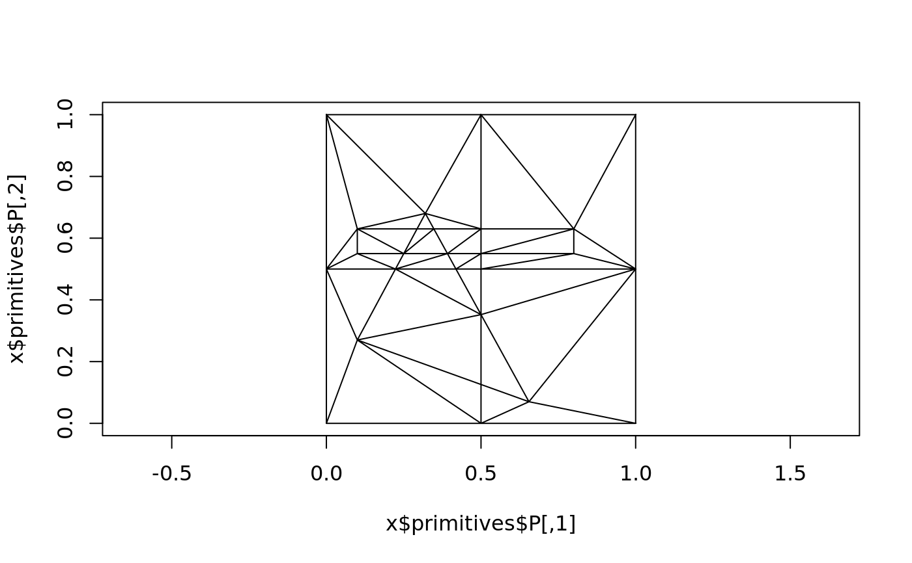
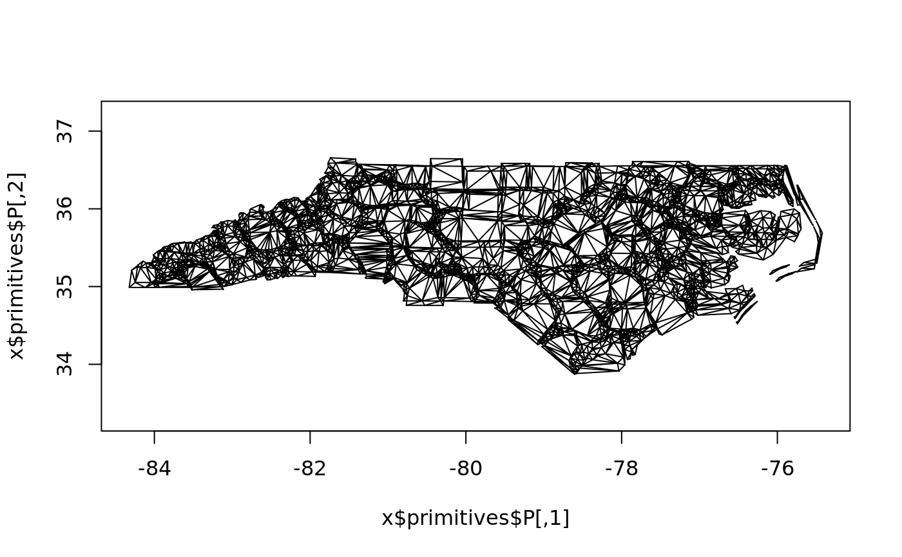

Plot the primitive space bucket
# S3 method for spacebucket plot(x, ...)
| x | spacebucket |
|---|---|
| ... | arguments to polypath |
nothing
library(sf) example(st_read)#> #> st_red> nc = st_read(system.file("shape/nc.shp", package="sf")) #> Reading layer `nc' from data source `/usr/local/lib/R/site-library/sf/shape/nc.shp' using driver `ESRI Shapefile' #> Simple feature collection with 100 features and 14 fields #> geometry type: MULTIPOLYGON #> dimension: XY #> bbox: xmin: -84.32385 ymin: 33.88199 xmax: -75.45698 ymax: 36.58965 #> epsg (SRID): 4267 #> proj4string: +proj=longlat +datum=NAD27 +no_defs #> #> st_red> summary(nc) # note that AREA was computed using Euclidian area on lon/lat degrees #> AREA PERIMETER CNTY_ CNTY_ID NAME #> Min. :0.0420 Min. :0.999 Min. :1825 Min. :1825 Alamance : 1 #> 1st Qu.:0.0910 1st Qu.:1.324 1st Qu.:1902 1st Qu.:1902 Alexander: 1 #> Median :0.1205 Median :1.609 Median :1982 Median :1982 Alleghany: 1 #> Mean :0.1263 Mean :1.673 Mean :1986 Mean :1986 Anson : 1 #> 3rd Qu.:0.1542 3rd Qu.:1.859 3rd Qu.:2067 3rd Qu.:2067 Ashe : 1 #> Max. :0.2410 Max. :3.640 Max. :2241 Max. :2241 Avery : 1 #> (Other) :94 #> FIPS FIPSNO CRESS_ID BIR74 SID74 #> 37001 : 1 Min. :37001 Min. : 1.00 Min. : 248 Min. : 0.00 #> 37003 : 1 1st Qu.:37050 1st Qu.: 25.75 1st Qu.: 1077 1st Qu.: 2.00 #> 37005 : 1 Median :37100 Median : 50.50 Median : 2180 Median : 4.00 #> 37007 : 1 Mean :37100 Mean : 50.50 Mean : 3300 Mean : 6.67 #> 37009 : 1 3rd Qu.:37150 3rd Qu.: 75.25 3rd Qu.: 3936 3rd Qu.: 8.25 #> 37011 : 1 Max. :37199 Max. :100.00 Max. :21588 Max. :44.00 #> (Other):94 #> NWBIR74 BIR79 SID79 NWBIR79 #> Min. : 1.0 Min. : 319 Min. : 0.00 Min. : 3.0 #> 1st Qu.: 190.0 1st Qu.: 1336 1st Qu.: 2.00 1st Qu.: 250.5 #> Median : 697.5 Median : 2636 Median : 5.00 Median : 874.5 #> Mean :1050.8 Mean : 4224 Mean : 8.36 Mean : 1352.8 #> 3rd Qu.:1168.5 3rd Qu.: 4889 3rd Qu.:10.25 3rd Qu.: 1406.8 #> Max. :8027.0 Max. :30757 Max. :57.00 Max. :11631.0 #> #> geometry #> MULTIPOLYGON :100 #> epsg:4267 : 0 #> +proj=long...: 0 #> #> #> #> #> #> st_red> ## Not run: #> st_red> ##D library(sp) #> st_red> ##D example(meuse, ask = FALSE, echo = FALSE) #> st_red> ##D try(st_write(st_as_sf(meuse), "PG:dbname=postgis", "meuse", #> st_red> ##D layer_options = "OVERWRITE=true")) #> st_red> ##D try(st_meuse <- st_read("PG:dbname=postgis", "meuse")) #> st_red> ##D if (exists("st_meuse")) #> st_red> ##D summary(st_meuse) #> st_red> ## End(Not run) #> st_red> # read geojson from string: #> st_red> geojson_txt <- paste("{\"type\":\"MultiPoint\",\"coordinates\":", #> st_red+ "[[3.2,4],[3,4.6],[3.8,4.4],[3.5,3.8],[3.4,3.6],[3.9,4.5]]}") #> #> st_red> x = read_sf(geojson_txt) #> #> st_red> x #> Simple feature collection with 1 feature and 0 fields #> geometry type: MULTIPOINT #> dimension: XY #> bbox: xmin: 3 ymin: 3.6 xmax: 3.9 ymax: 4.6 #> epsg (SRID): 4326 #> proj4string: +proj=longlat +datum=WGS84 +no_defs #> geometry #> 1 MULTIPOINT (3.2 4, 3 4.6, 3... #> #> st_red> ## Not run: #> st_red> ##D library(RPostgreSQL) #> st_red> ##D try(conn <- dbConnect(PostgreSQL(), dbname = "postgis")) #> st_red> ##D if (exists("conn") && !inherits(conn, "try-error")) { #> st_red> ##D x = st_read(conn, "meuse", query = "select * from meuse limit 3;") #> st_red> ##D x = st_read(conn, table = "public.meuse") #> st_red> ##D print(st_crs(x)) # SRID resolved by the database, not by GDAL! #> st_red> ##D dbDisconnect(conn) #> st_red> ##D } #> st_red> ## End(Not run) #> st_red> #> st_red> #> st_red>